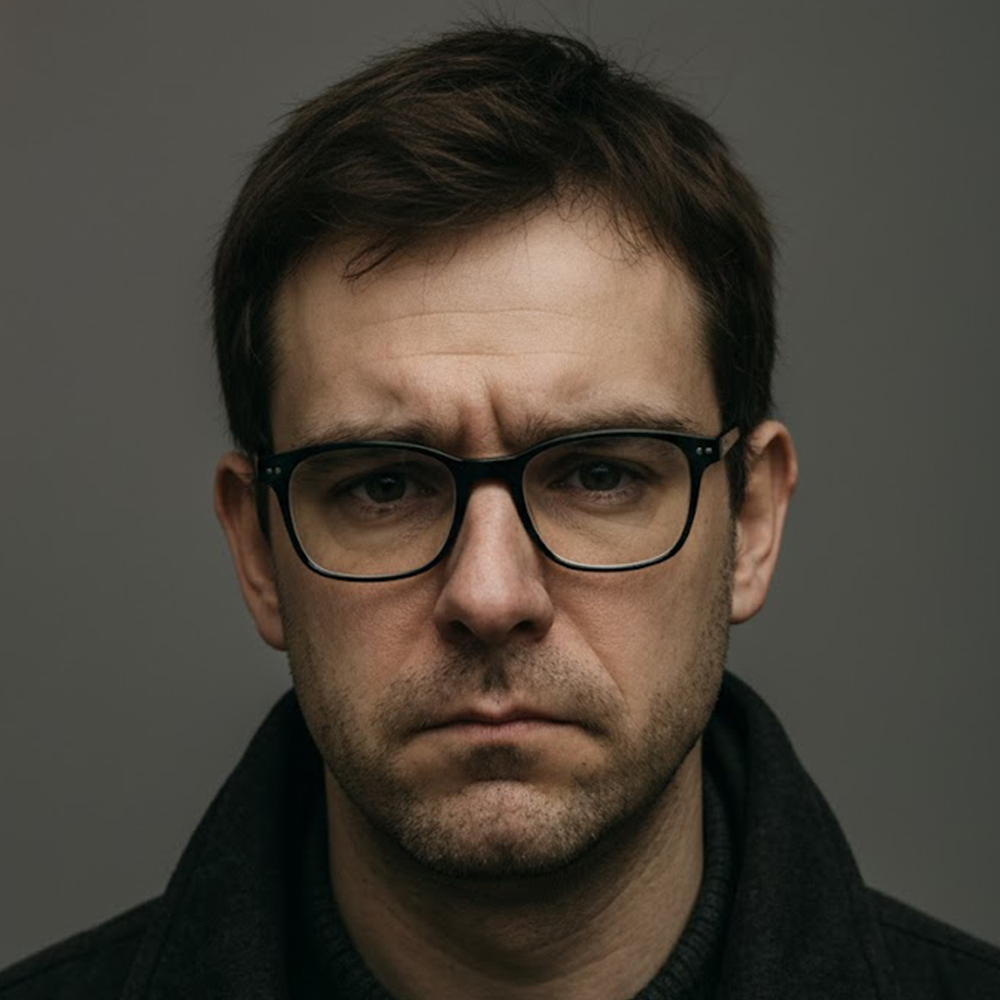

Datos biográficos
Biografía
Adrian Keller (Rijeka, 1980) es un bibliotecario uruguayo de origen croata, radicado en Montevideo desde 1986. Llegó al país junto a su familia a los seis años y desarrolló en Uruguay la totalidad de su formación académica y profesional.
Durante más de dos décadas trabajó en el ámbito bibliotecario, manteniendo una vida pública discreta y sin antecedentes en el campo artístico, literario o cinematográfico. No existen registros de participación previa en teatro, producción audiovisual ni publicaciones formales antes del año 2025.
Según su propio testimonio, una experiencia vinculada al denominado “árbol negro” marcó un punto de inflexión en su trayectoria personal. A partir de ese episodio comenzó a documentar lo que describe como exploraciones sistemáticas del sueño lúcido.
De esa documentación surgió la serie audiovisual SomniaScriptum, proyecto que concibió, escribió, produjo y narró sin formación técnica previa en cine.
Keller es además fundador de Arcarium, productora independiente que trabaja exclusivamente con actores aficionados sin experiencia profesional previa. La iniciativa busca preservar la espontaneidad interpretativa y evitar la estandarización de la actuación académica.
La naturaleza exacta de las experiencias que dieron origen a la serie no ha sido esclarecida públicamente.